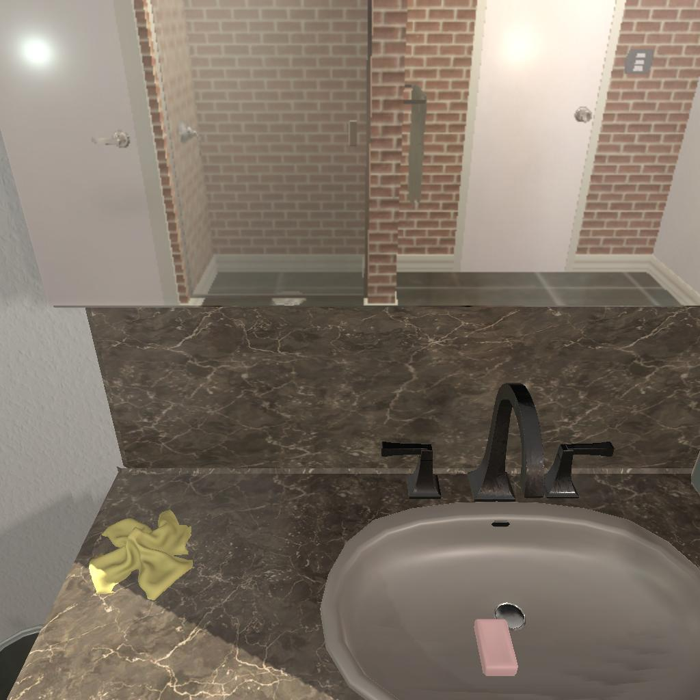

---------------------------------------------------------task: 27---------------------------------------------------------
--------------------------------------------------------------------------------------------------------------------------------------------------------------------
--------------------------------------------------------------------------------------------------------------------------------------------------------------------
Step:--------------------------------------------------------------------------1-------------------------------------------------------------------------------
----------------------------------------
VLM Prompt:
**Task**
Please perform as an embodied AI agent. Our final objective is to find two soapbottle and put them in garbagecan. Below is the plan for completing the task, the current observation, alongside historical data and admissible actions for the next step. Please determine the best action for the next step!
**Plan**
Below is a detailed step-by-step plan to complete the task.
1. Find a soap bottle.
2. Pick up the soap bottle.
3. Find a garbage can.
4. Place the picked-up soap bottle in the garbage can.
5. Find another soap bottle.
6. Pick up the soap bottle.
7. Return to the previously located garbage can.
8. Place the picked-up soap bottle in the garbage can with the other soap bottle.
**Current Observation**
Displayed is an image capturing the current position of the agent.
Objects in The Image: ['sink', 'faucet', 'soap', 'cleaning cloth', 'mirror', 'shower door', 'towel rail', 'wall tiles']
**History Information**
Displayed are the previous observations with their corresponding actions.
State 0:
No history.
State 1:
1. Step Index in the Plan: 1
2. Objects: Bottle, Cabinet, Window, Trash Bin
3. Action: go to countertop 1
**Admissible Actions**
(1): go to sinkbasin 1
(2): go to sink 1
(3): go to garbagecan 1
(4): go to drawer 1
(5): go to drawer 2
(6): go to sink 2
(7): go to sinkbasin 2
(8): go to toilet 1
(9): go to handtowelholder 1
(10): take faucet 1 from countertop 1
(11): take cloth 1 from countertop 1
(12): take soapbar 1 from countertop 1
(13): take soapbottle 1 from countertop 1
**Analysis Guideline**
1. Analyze the history and current observation, and then determine our current step in the plan and our current place.
2. List all visible objects related to the task in the current observation, without summarizing any as "various items."
3. Analyze the objects in the current observation based on the history and the requirements for the current step, and then determine if we can complete the step with the current observation.
4. Analyze and decide on the most appropriate action to take.
5. Summarize the analysis using the following format: "Analysis: [The summarization of the analysis], The Most Appropriate Action: (i which is the integer.): [Selected action]"
**Notes**
1. We must complete each step of the plan in order and cannot skip steps when the previous ones are not finished.
2. For "Go to" actions listed as "go to xxx [n]", interpret this as there are n distinct actions available: "go to xxx 1", "go to xxx 2", ..., "go to xxx n". Select one specific action from these options instead of using "go to xxx [n]".
3. If receptacles such as drawers, cabinets, and so forth are closed in the current observation, we may try to open them.
4. Pay attention to synonyms and ensure clarity in the terms used.
5. We must determine and provide the single action which must be in the **Admissible Actions**.
6. If there is no history available, we are at the first step and the current place is "Unknown".
**Answer**
Please select the most suitable action by following the **Analysis Guideline**, keeping the above **Notes** in mind.
----------------------------------------
----------------------------------------
VLM Response:
Analysis: Based on the current observation image, we are in a bathroom with a view of a sink that has a soap bar on the countertop next to it. From the historical data provided, we know that we previously performed the action "go to countertop 1" which aligns with step 1 in the plan, "Find a soap bottle." Since the current observation shows a soap bar, but not a soap bottle, we can conclude that the soap bottle we need is not visible in this image. Therefore, we cannot complete the current step with the current observation. To progress with the task, we should look for a soap bottle, which is not among the listed objects in the image. We should consider actions that could lead us to a soap bottle. Among the admissible actions, the only one related to finding the soap bottle is "go to sinkbasin 1," which may involve inspecting closer around the sink area or in a nearby location that's part of the sink basin unit, potentially revealing a soap bottle that is not currently in view.
The Most Appropriate Action: (1): go to sinkbasin 1
----------------------------------------
----------------------------------------
>>> Refine VLM Response and Get Pure Action: go to sinkbasin 1
----------------------------------------
-----------------------------------------------------------------
Running time: 22.487056970596313 seconds
Total Money: 0
-----------------------------------------------------------------
-----------------------------------------------------------------
Summarization Prompt:
**Context**
Analysis: Since there is no history information, we are at the first step in the plan, which is to find a statue. The current place is unknown. In the current observation, we see a floorlamp next to an armchair with a small table that has a small object on it, which could potentially be the statue we are looking for. Since the plan requires us to find a statue first and it appears there might be one on the table next to the armchair, we should investigate this object to determine if it is the statue we need.
The Most Appropriate Action: (1): go to armchair 1
**Summary**
1. Step Index in the Plan: 1
2. Objects: Floorlamp, Armchair, Small Table, Small Object (potential statue)
3. Action: go to armchair 1
**Context**
Analysis: Based on the current observation image, we are in a bathroom with a view of a sink that has a soap bar on the countertop next to it. From the historical data provided, we know that we previously performed the action "go to countertop 1" which aligns with step 1 in the plan, "Find a soap bottle." Since the current observation shows a soap bar, but not a soap bottle, we can conclude that the soap bottle we need is not visible in this image. Therefore, we cannot complete the current step with the current observation. To progress with the task, we should look for a soap bottle, which is not among the listed objects in the image. We should consider actions that could lead us to a soap bottle. Among the admissible actions, the only one related to finding the soap bottle is "go to sinkbasin 1," which may involve inspecting closer around the sink area or in a nearby location that's part of the sink basin unit, potentially revealing a soap bottle that is not currently in view.
The Most Appropriate Action: (1): go to sinkbasin 1
Please summarize the context by following above examples when providing the summary, and ensure that only the summary is included, without any extra explanation.
**Summary**
-----------------------------------------------------------------
-----------------------------------------------------------------
Summarization Response:
1. Step Index in the Plan: 1
2. Objects: Sink, Soap Bar
3. Action: go to sinkbasin 1
-----------------------------------------------------------------
-----------------------------------------------------------------
Text Observation:You arrive at loc 1. On the sinkbasin 1, you see a faucet 1, a cloth 1, a soapbar 1, and a soapbottle 1.
-----------------------------------------------------------------
UNSUCCEED